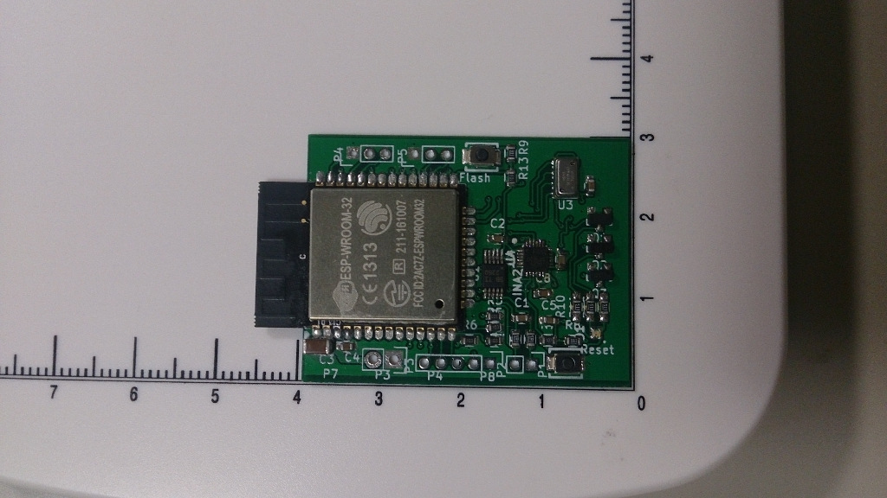

My ESP-WROOM-32 board has 2 spi slave devices MPU-9250 and MS5611. I've troubled with DMA on spi. It looks issue 598 which happens when DMA is used with the half-duplex mode and the command/address phases are disabled. With enabling command phase, the problem went away.
@@ -105,12 +105,12 @@ static esp_err_t baro_write(uint8_t reg, uint8_t val) esp_err_t ret; static spi_transaction_t trans; memset(&trans, 0, sizeof(spi_transaction_t)); - trans.length=16; - trans.tx_data[0] = reg & 0x7f; - trans.tx_data[1] = val; - trans.flags=SPI_TRANS_USE_TXDATA; + trans.length = 8; + trans.command = reg & 0x7f; + trans.tx_data[0] = val; + trans.flags = SPI_TRANS_USE_TXDATA; ...